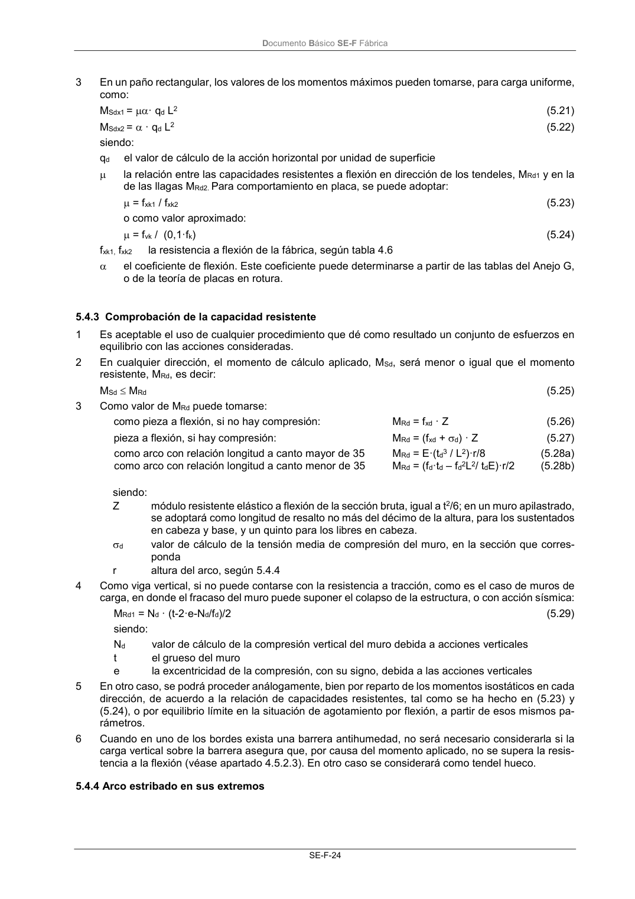
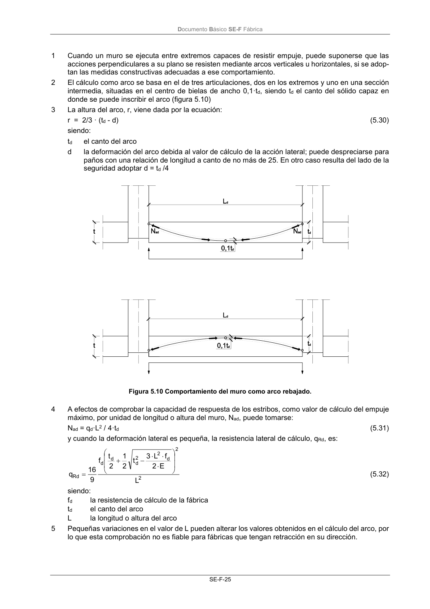

DB-SE-F Fábrica · edición 2019-12-20 · capa oficial
Documento DB-SE-F-oficial · SHA-256 del PDF e3e0805c3b4c307519c26dc34c3fdbf143d842edd013c91b0f52d2c73403d91c
Copia fiel del PDF fuente · Fuente oficial
Ficha de la disposición en la fuente oficial
Formatos: JSON del segmento · Markdown
5.4.4 Arco estribado en sus extremos Documento Básico SE-F Fábrica SE-F-25 1 Cuando un muro se ejecuta entre extremos capaces de resistir empuje, puede suponerse que las acciones perpendiculares a su plano se resisten mediante arcos verticales u horizontales, si se adop- tan las medidas constructivas adecuadas a ese comportamiento. 2 El cálculo como arco se basa en el de tres articulaciones, dos en los extremos y uno en una sección intermedia, situadas en el centro de bielas de ancho 0,1·td, siendo td el canto del sólido capaz en donde se puede inscribir el arco (figura 5.10) 3 La altura del arco, r, viene dada por la ecuación: r = 2/3 · (td - d) (5.30) siendo: td el canto del arco d la deformación del arco debida al valor de cálculo de la acción lateral; puede despreciarse para paños con una relación de longitud a canto de no más de 25. En otro caso resulta del lado de la seguridad adoptar d = td /4 Figura 5.10 Comportamiento del muro como arco rebajado. 4 A efectos de comprobar la capacidad de respuesta de los estribos, como valor de cálculo del empuje máximo, por unidad de longitud o altura del muro, Nad, puede tomarse: Nad = qd·L2 / 4·td (5.31) y cuando la deformación lateral es pequeña, la resistencia lateral de cálculo, qRd, es: 2 2 d 2 2 d d d Rd L E 2 f L 3 t 2 1 2 t f 9 16 q (5.32) siendo: fd la resistencia de cálculo de la fábrica td el canto del arco L la longitud o altura del arco 5 Pequeñas variaciones en el valor de L pueden alterar los valores obtenidos en el cálculo del arco, por lo que esta comprobación no es fiable para fábricas que tengan retracción en su dirección. Documento Básico SE-F Fábrica SE-F-26

